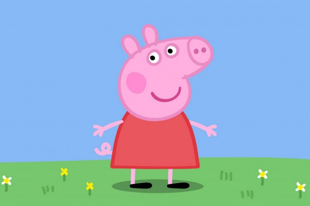

<!--
Aufgabe 2 Schreibe den HTML-Code für eine Seite mit der Überschrift 
"Meine drei Lieblingsfarben" und einer Liste von drei Farben: 
rot, grün und blau.
Binde ein Bild von einem Gegenstand in deiner absoluten 
Lieblingsfarbe ein.
-->

<html>
    <body>
       <h1>Meine drei Lieblingsfarben</h1>
       <ol>
        <li>Blau</li>
        <li>Schwarz</li>
        <li>Silber</li>
       </ol>
       
    </body>
</html>